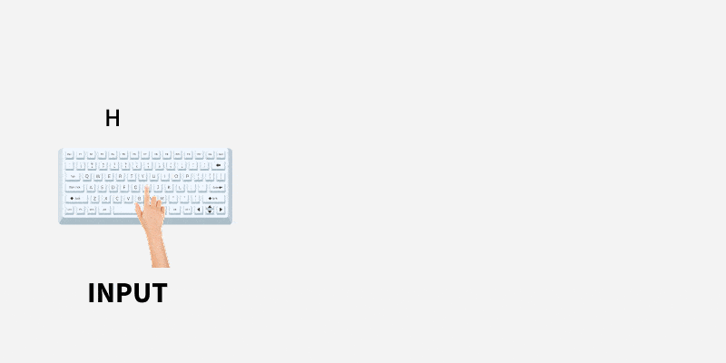
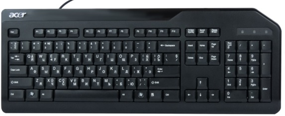
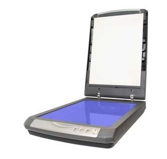
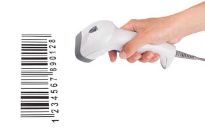
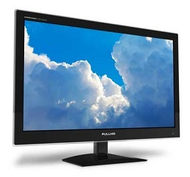
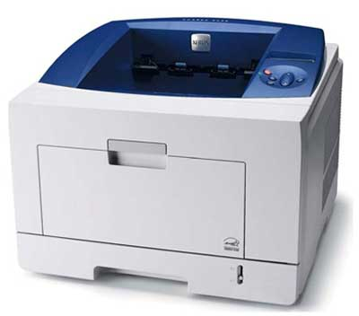

A computer processes information using a continuous cycle: Input → Process → Output. Without input devices, a computer would have no data to process. Without output devices, it would have no way to show us the results.

Input devices convert user actions (like typing or clicking) into signals the computer can understand. They allow us to send data and instructions into the system.

The most common input device. It allows users to input text, numbers, and commands using a standard layout (like QWERTY).
A handheld pointing device used to move a cursor, select items, drag files, and click on programs on the screen.

Works like a photocopier, converting physical documents, photos, or text into a digital format that can be stored on the computer.

Uses light beams to decode the thick and thin lines of barcodes found on products, instantly sending the product code to the computer.
Output devices display or produce the results of the computer's processing. They convert digital data back into a form humans can understand (like images, sound, or physical paper).

The primary visual output. Older models used heavy CRT tubes, but modern monitors use flat-panel LCD, LED, or OLED screens.

Produces physical hard copies of digital documents. The two most common types are Inkjet (good for photos) and Laser (fast for text documents).
Audio output devices that convert digital audio signals into sound waves for listening to music, videos, and game effects.
Projectors magnify the computer's screen onto a wall for large audiences. Smartboards do this while also allowing touch interaction.